Everything in the editor, explained for someone opening it
for the first time. Pick a tab. Every picture on this page is a real
screenshot of the app or a real page it worked on.
The seven steps
What each step does
Run them in order the first time. After that, rerun any
one of them whenever you change something.
Find text
Puts a box on every piece of writing on the page: dialogue in
balloons, thoughts floating on the art, drawn sound effects. It runs on
your machine and costs nothing.
Before
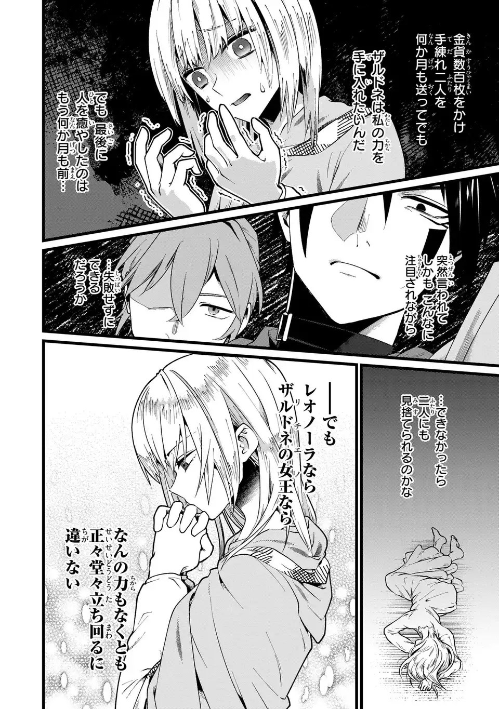
After
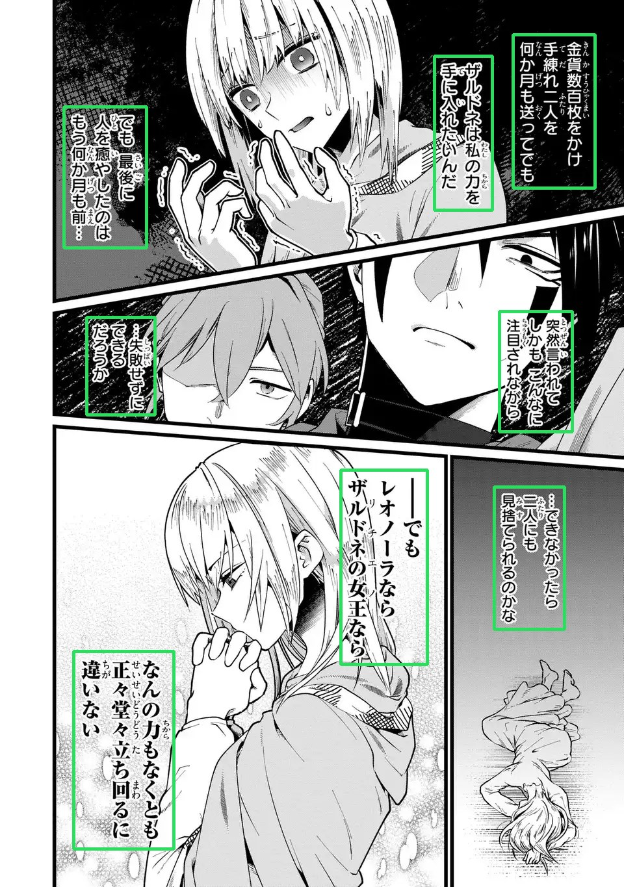
Wrong or missing boxes? You never have to accept
what it found. Draw a box by hand, delete one, resize one, or merge
several. See the "Working with boxes" tab.
Manhwa and manhua too
Tall colour strips work the same way. In
Settings › Language & direction pick Manhwa for
Korean or Manhua for Chinese, and Find text retunes itself for
webtoon pages: it reads down instead of across, expects colour rather
than screentone, and copes with a strip that arrived as one enormous
file. Both go down the same route.
How much this has been run. Korean has had many
chapters. Chinese has had one — 41 pages, 86 blocks, and it
behaved. If a Chinese chapter goes wrong for you, that is worth
reporting; there is not yet a pile of evidence saying it should not.
Before
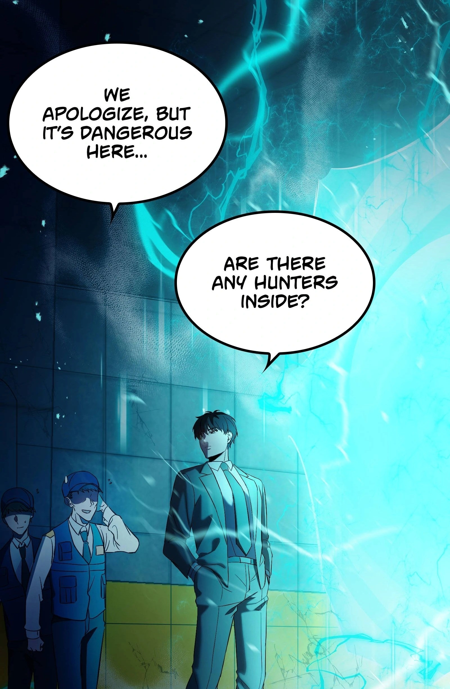
After
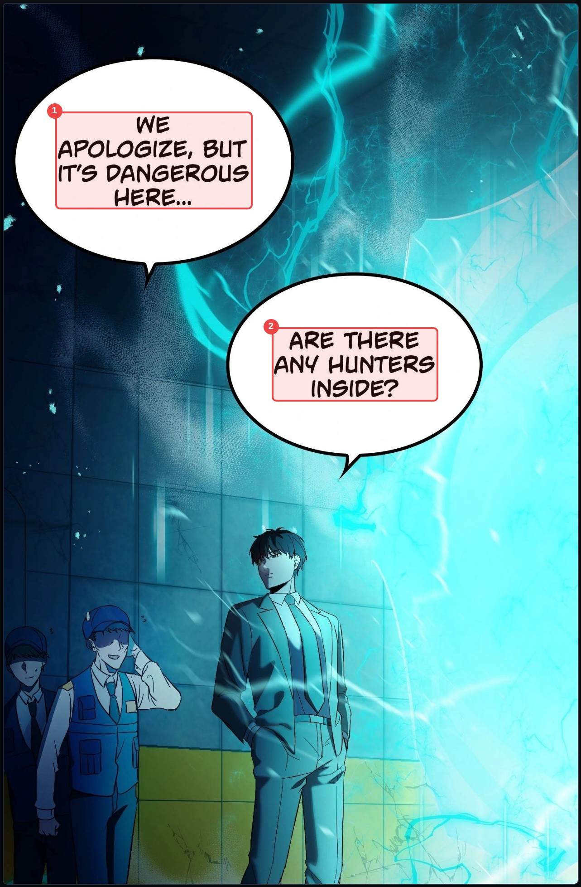
Read text
Reads the original writing inside every box, so the translator gets
the real words. Each box in the side panel fills in with what was
read. If two boxes overlap, each one is read on its own text only, so
nothing is read twice. This step calls the AI, so it costs coins; the
button shows the price first.
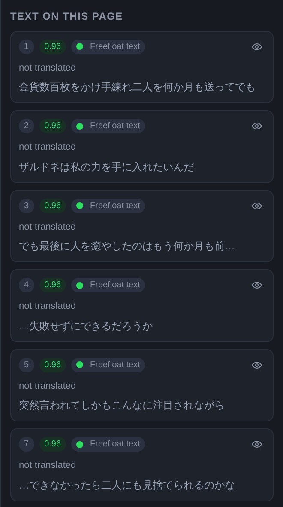
After Read text, every box in the side panel carries the
original line.
Translate
Translates every box with the AI you picked in Settings. It uses
your glossary, your character sheet and your synopsis, so names stay
spelled one way and characters keep their voice.
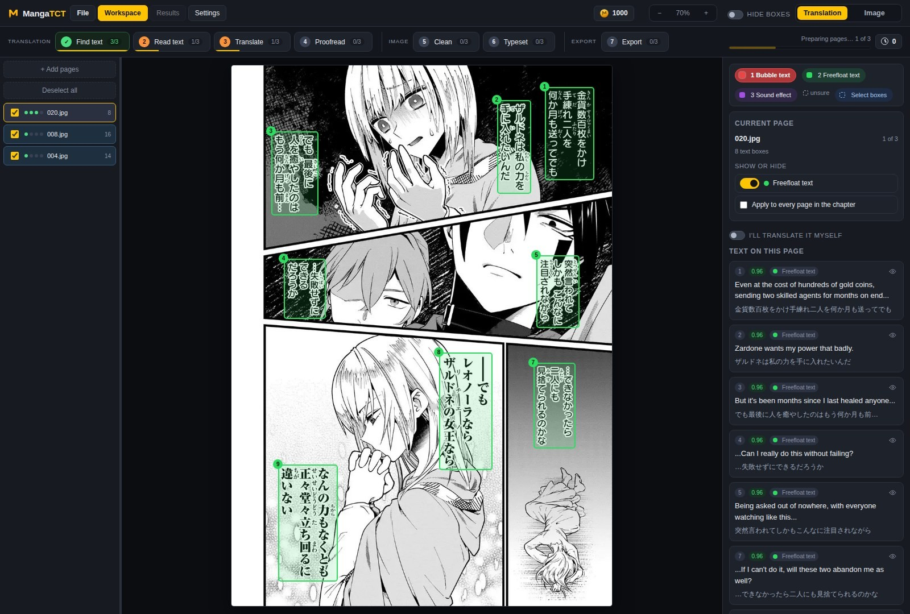
Original and translation side by side. Edit any line and
the page updates.
Want to translate it yourself? Flip the "I'll
translate it myself" switch in the side panel and type into the boxes.
Nothing is sent anywhere and translation costs nothing.
Proofread
An optional second pass for quality. A second AI reads the whole
chapter as one story and fixes what the first pass got wrong: a name
spelled two ways, a line that drifted from the glossary, a sentence
split oddly across two balloons. Skip it when you are happy with the
translation as it is.
Clean
Wipes the original writing off the artwork and rebuilds what was
behind it. An optional AI cleaner for the hard spots can be switched
on in Settings.
Before
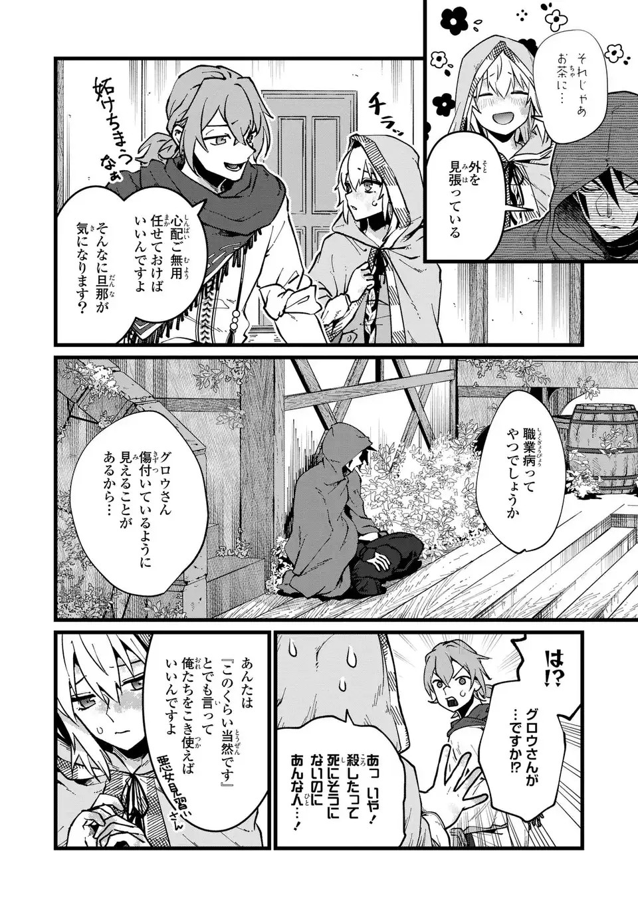
After
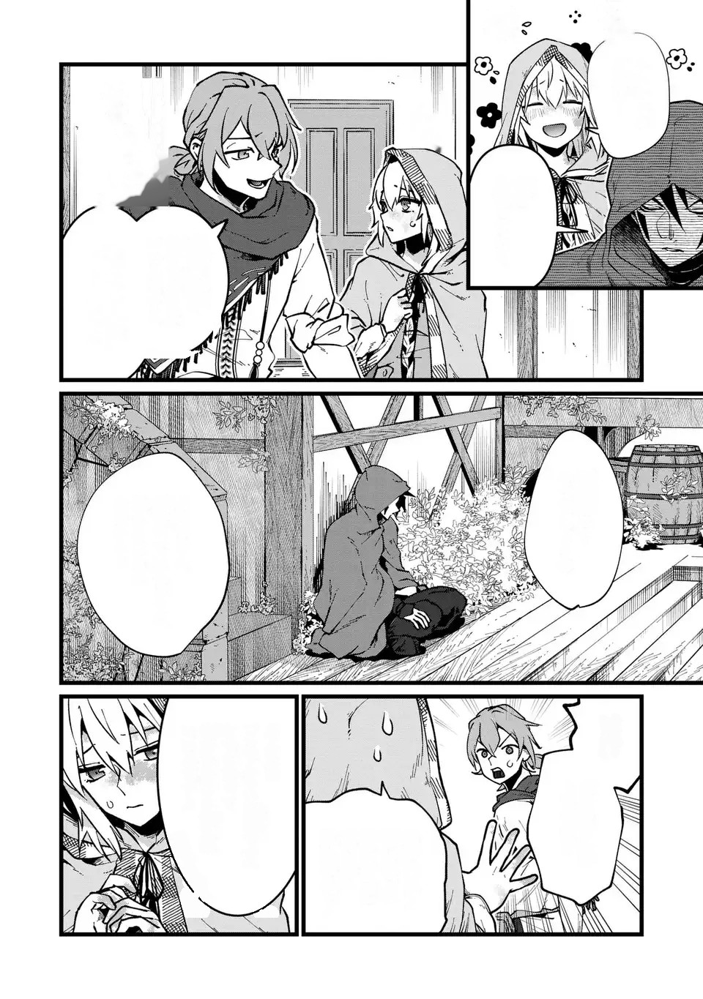
Already have cleaned pages? You can hand the app
your own cleaned page for any page, and it will typeset onto that
instead.
Typeset
Sets the English into every balloon: picks a size that fits, breaks
the lines, centres the block, and keeps effects like outlines and
colour. Rerunning it is instant, so tweak as much as you like.
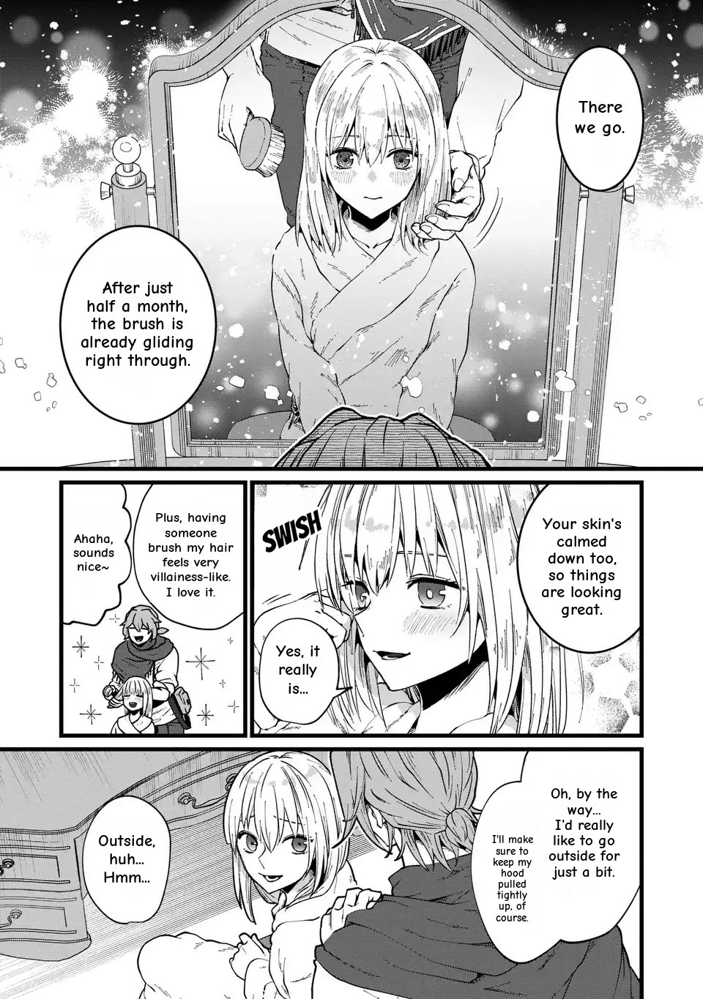
The page from the Clean step, finished. Every line still
editable, box by box.
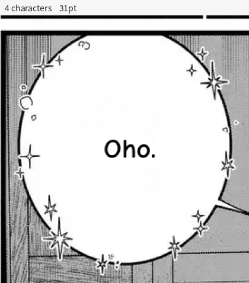
Text refits live as you edit it.
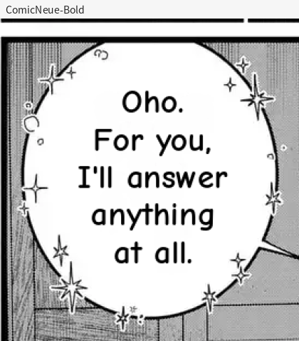
Any bubble can have its own font.
Bending a line: the curve picker
Sound effects and shop signs rarely sit on a straight line. Select a
box and the side panel's Curve row offers four shapes, then one
slider for how far:
| Arch | bowed up, like a rainbow |
| Sag | the same bow the other way, drooping down |
| Wave | one S along the line |
| Rise | the line slants up, but every letter stays upright |
Amount runs from −180 to 180.
Zero is a straight line, and negative bends it the opposite way, which
is why Arch and Sag are the same shape with opposite signs. Drag the
slider to feel it, or type an exact number in the box beside it.
Glow, outer and inner
Under Colour there are two glows and they do different jobs.
Outer glow spreads a colour outward from the letters — the
usual way to lift white text off busy art. Inner glow works
inward from the letter edges, so the colour sits inside the
stroke; it is what gives a sound effect that hot-metal look without
touching the shape at all. Each has a colour well and a Size in
pixels, and the red × beside each one turns just that glow
off. A colour well left empty means "automatic", not "none".
Special characters
The typesetting faces have almost no ♥, ♪ or ✦ in
them as letters, so typing one usually gets you an empty rectangle.
Special characters opens a grid of symbols the app stamps from
its own symbol faces instead: they come out at the size of the
surrounding type and take its colour, so a heart at the end of a line
of dialogue matches it. Every square in that grid is a picture of what
will actually be stamped, not your browser's version of the character,
which is a different shape on every machine.
Export
Writes the finished pages to a folder as image files, ready to
post. You choose the format and the naming in Settings, and the
Results tab shows everything the chapter produced.
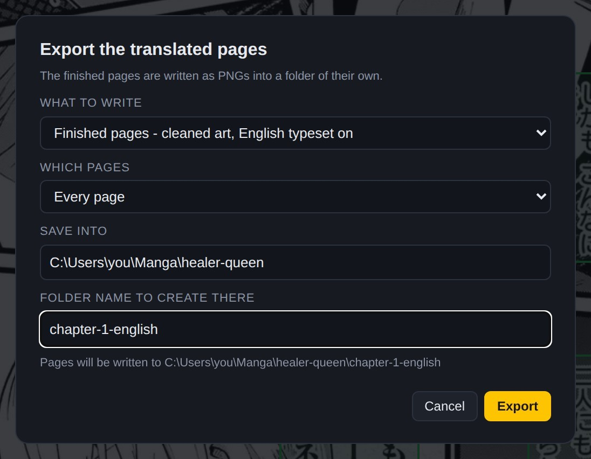
The finished chapter, one click from a folder of
files.
Working with boxes
Every piece of text lives in a box
Find text draws them, but they are yours: move them,
retype them, merge them, delete them. This tab is the toolbox.
Bubble text, freefloat text, sound effects
Every box is one of three types, and the type decides how it is
cleaned and typeset:
Bubble text
Dialogue inside a drawn
balloon. Cleaned to the balloon's shape, typeset centred inside
it.
Freefloat text
Words lying on the
artwork with nothing drawn around them: thoughts, captions,
labels.
Sound effect
Drawn sounds painted into
the picture. They get their own cleaning and their own styling, and
you can turn them at any angle.
Changing a type
Select a box and press
1, 2 or 3, or pick from its menu in
the side panel. The buttons above the page also set which type a
box you draw comes out as.
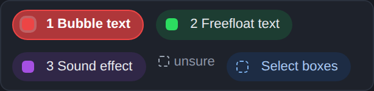
The legend above the page. Each type has its colour, and
the blue button on the end is the box select tool.
Selecting boxes
| Click | select one box |
| Ctrl + click | add another box to the selection |
| S | arm the box select tool, then drag a square: every box it touches is selected |
| Shift + drag | with the tool armed, add to what is already selected |
| Click empty space | with the tool armed, clear the selection |
| Esc or S again | put the tool away |
The tool stays armed after a drag, so you can
sweep panel after panel without rearming it.
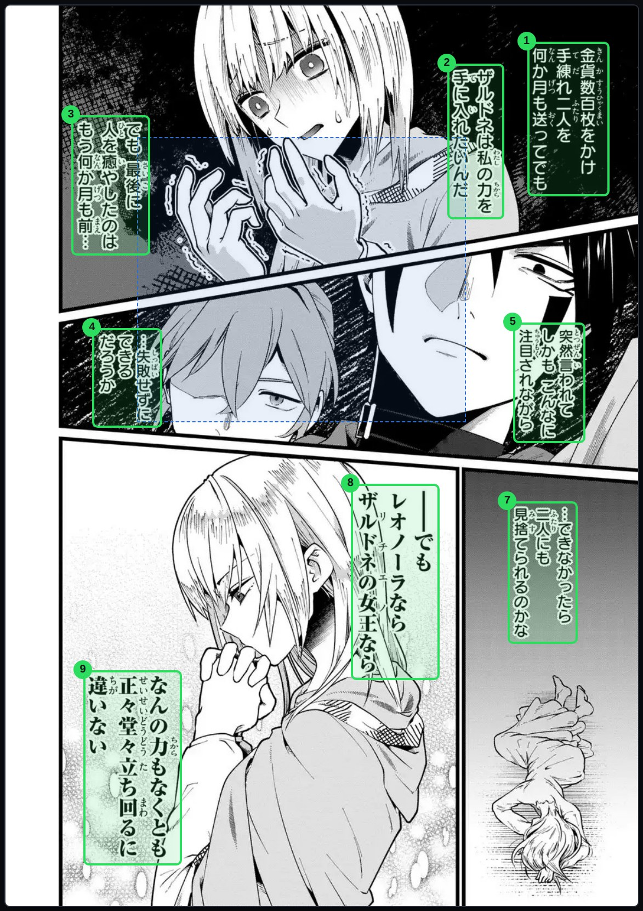
Drag a square. Touching a box is enough, you do not have
to swallow it whole.
Fixing what Find text got wrong
| Draw | drag on empty page to draw a new box, in the type lit in the legend |
| Resize | drag any corner or edge of a selected box |
| Turn | every box has a rotation handle, for diagonal sound effects |
| Del | remove the selected box |
| M | merge the selected boxes into one box that fits them all |
| L | link a box to another bubble, for one sentence split across two balloons |
Merging deletes the old boxes, draws one box
around everything they covered, and keeps their text joined in reading
order. Select two or more boxes and the Merge button also appears in
the side panel.
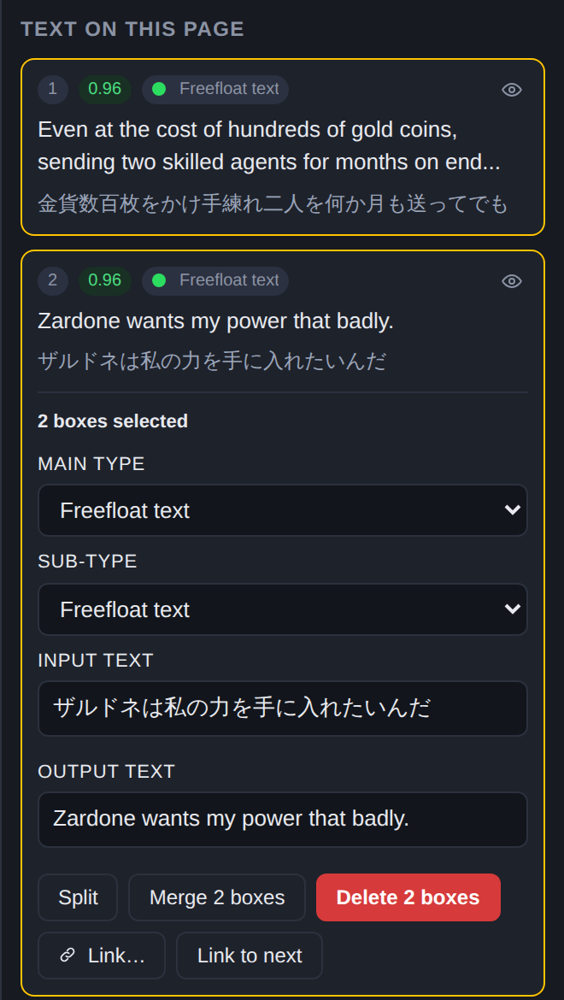
Two boxes selected: the side panel offers
Merge.
Show and hide
The "Show or hide" card on the side panel switches whole groups on
and off for the current page: hide the sound effects while you work on
dialogue, then bring them back. Tick "Apply to every page in the
chapter" to make it chapter wide. A hidden box is not deleted; it is
just out of your way, and no step touches it while it is hidden.
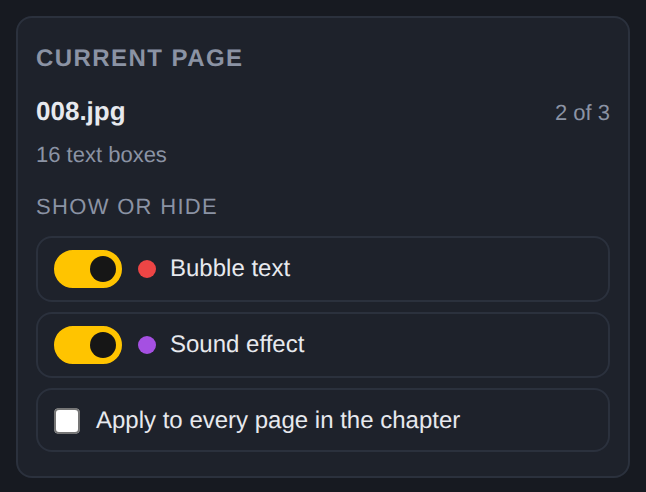
The eye icon on any single row does the same for one
box.
Settings that matter
The handful worth knowing on day one
Settings has a page for everything. Here is the whole rail
first, so you know where a thing lives, and then the ones a new chapter
actually needs.
Everything in the Settings rail
Two groups down the left-hand side. Story is what this series
is; Settings is how the app should handle it, in pipeline order
— what the chapter is, what finds the text, what reads and writes
it, what cleans the page, what sets the words.
| Story settings | whether the story context is used at all, and the switches that shape it |
| Synopsis | two sentences about the story, so the translator knows who is who |
| Characters | each name spelled the way you want it, with a word on how they speak |
| Places, terms & other | the glossary: anything that must always come out the same way |
| Language & direction | manga, manhwa or manhua; which language in, which out; which way the page reads |
| Detection & OCR | which detector finds your text, and which reader reads it |
| Translation | how the English should sound — the wording rules, not the model |
| AI models | which model does the reading, the translating and the proofreading |
| Page cleaning | how hard the eraser works and what it is allowed to touch |
| Fonts & typesetting | your faces, the default one, and how text is fitted into a balloon |
Two neighbours that sound alike.
Translation is about the words — how formal, what to leave
untranslated, how honorifics come out. AI models is about the
machine doing it. Changing the model does not change the wording rules,
and changing the wording rules does not cost you a penny.
Language & direction
The first screen to set on a new chapter, because almost everything
below it follows from the answer. Three choices:
- What you are translating
Manga, manhwa or manhua. This
is not decoration: manga goes down the page-by-page route, manhwa
and manhua go down the tall-strip route, and the two routes find
text differently, cut pages differently and expect different
art.
- From and to
The source language and the one you want
out. The source also decides which readers are offered on the next
screen — not every reader knows every script.
- Which way the page reads
Right-to-left for Japanese
manga, left-to-right for most everything else. This is what puts
the boxes in the right order for the translator, so a page where
the dialogue comes out shuffled is usually this setting.
Strips that arrived as one huge file get their
own switch on this screen. The app can cut a machine-sliced strip back
into pages by itself, and only when several separate checks agree,
because being wrong there rearranges your chapter behind your back. To
cut a page yourself, see Cut / join in Tips and fixes.
Which detector finds your text
Four cards, one choice. Each card shows how long it takes on your
chapter and a score from a hand-checked test of 226 pieces of text.
AnimeText is the default and wants its model file next to the app;
comic-text-detector is the built-in fallback and needs nothing
downloaded. A card that cannot run tells you exactly what it is
missing, in amber, on the card.
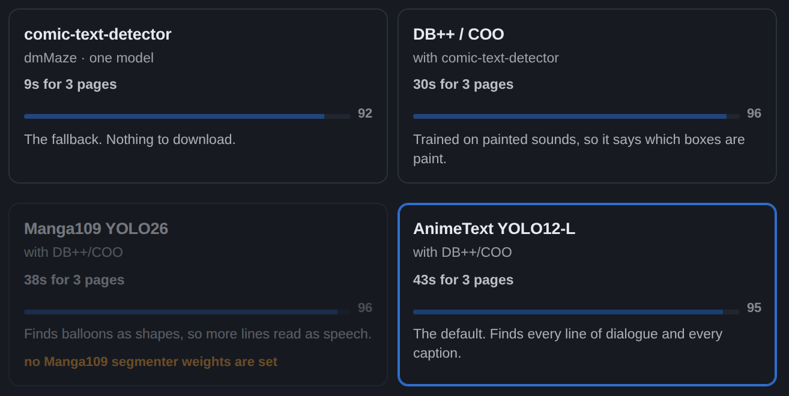
Pick a card. The time is for your chapter, the score is
measured, and the amber line is what to download if you want that
card.
Which reader reads it
Separate choice, same screen. The AI reader sends the page to
whichever model you picked and costs coins. On this computer runs
a reader on your own machine and costs nothing.
Korean and Chinese need one extra install to read
locally. Japanese works out of the box; Korean and Chinese are read
by easyocr, which does not ship with the app because of its size.
Run pip install easyocr once and the local option works for
them too. Or point Read text at a vision model and skip it entirely -
that path needs nothing installed.
How the English should sound
This screen is about the words, not the machine. Two switches:
- Keep honorifics and forms of address
On by default. The
bubble that says グロウさん comes out
as "Glow-san" rather than "Mr. Glow". It follows the source language
on its own, off the medium you set in Language & direction:
Japanese suffixes for manga, oppa and hyung for manhwa, gege and
shizun for manhua. Turn it off and the translator renders them the
English way instead.
- Let the reading fix sound effect vs outside text
Off by
default. Find text only ever sees a shape, and loose text on the
artwork looks the same whether it is a drawn sound or a narrator's
line — so it mixes those two up, and only those two. Turn this
on and the words settle it as soon as they are read. It is off by
default because it will overwrite a type you set by hand.
Changing either of these is free and instant. They cost
nothing to try, and rerunning Translate is the only thing that spends
anything.
Page cleaning
There is no eraser to pick. One was measured against five others on
nine hard boxes off a real chapter — sound effects and outside
text over hatching and screentone — and it won, so it is simply
the cleaner now. A plain white balloon never goes anywhere near it: on
white the colour is known exactly, so it is filled on your own machine
and the page is not sent.
The one switch worth knowing is Use the text detector while
cleaning, on by default. After a page is cleaned it is read again
with the same detector that found the boxes, and anything still legible
inside a box that was supposed to be empty gets erased on a second pass.
That is what stops a cleaned balloon from still faintly saying what it
used to say.
The page still looks wrong? Paint over it. The
Image view has brushes, fills and a healing tool that work underneath
the typesetting, and your strokes survive a recleaning.
Fonts
Add your own fonts and pick the default the typesetter uses. Any
single bubble can override it later. If a font is missing a character,
the typesetter can substitute a close one, and that switch is yours to
turn off.
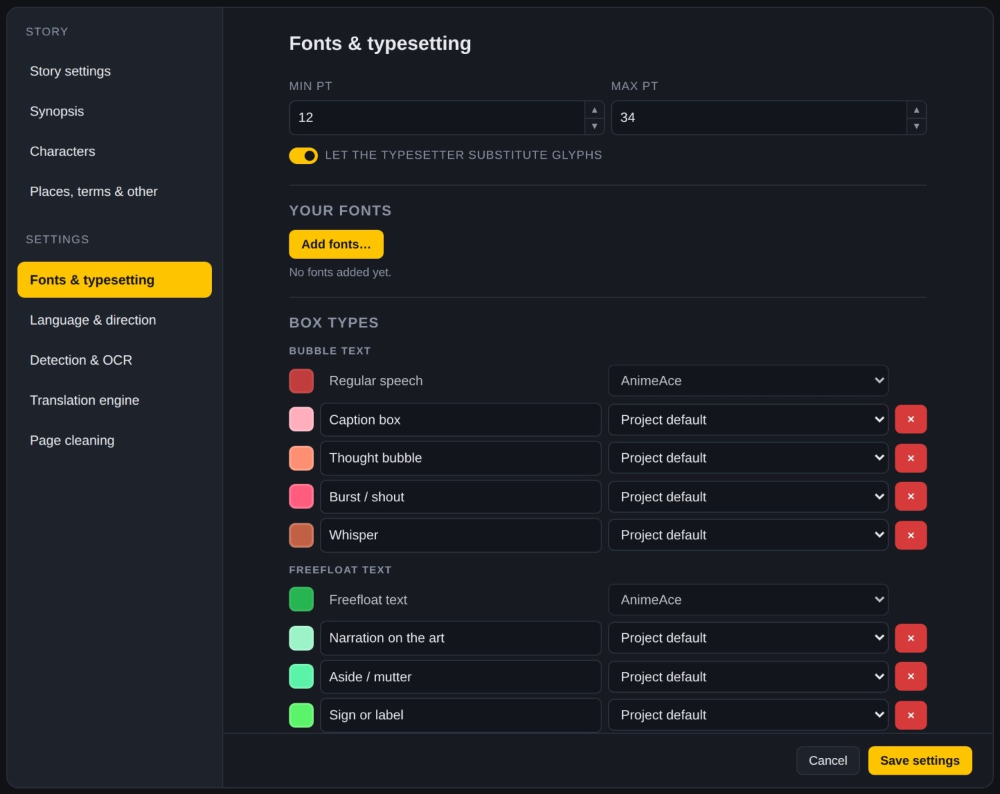
Your fonts, the default face, and the substitute
switch.
Story, characters, glossary
Three lists that make the translation consistent:
- Synopsis
Two sentences about the story, so the
translator knows who is who.
- Characters
Each name, spelled the way you want it, with
a word on how they speak.
- Glossary
Terms that must always come out the same way:
places, skills, titles.
Fill them once per series. A new chapter in the same folder keeps
the translation setup and clears the story content, ready for the
next one.
AI models
Pick which model reads, translates and proofreads. Cheaper models
are fine for reading text; the better ones earn their price on
translation. The pricing page has a calculator that quotes a whole
chapter before you spend anything.
This screen sets the machine. What you want it to do with the
words is the Translation screen above it — they are
separate on purpose, so you can change model without losing your wording
rules.
Tips and fixes
The things everyone asks in the first week
Stop means stop
The Stop button cancels the page being worked on, not just the
pages after it, and refunds the coins for every page the run never
reached.
Redo one page
Untick every page but one in the rail and rerun a step: it runs on
the ticked page alone. Right-clicking a page offers the same per
page actions.
A slow first page is the models loading
The detector models load when you pick their card, and the bar
says "Loading" while they do. If every page is slow, plug the laptop
in and set Windows to Best performance; the app prints a line about
any page that took too long, with where the time went.
The page looks wrong after cleaning
Paint over it. The Image view has brushes, fills and a healing
tool that work under the typesetting, and your strokes survive
recleaning.
A page that is the wrong length: Cut / join
Webtoon chapters arrive in whatever pieces the site felt like. The app
re-cuts a machine-sliced strip on its own, but only on a chapter that
arrived that way, only before you have done any work on it, and only
when several separate checks agree — being wrong there rearranges
somebody's chapter behind their back. Every other too-long page is left
exactly as it came, and Cut / join is the knife for those.
It is in the Translation view, on the page you are looking at,
because that is the view you are in when you notice the page is wrong.
Open it and you get the page with a ruler down it:
- Click to put a cut line down. Click it again to take it
away.
As many as you like, in one go. A 10,000-row webtoon is
four or five pages, and they are all made in a single pass rather than
one cut at a time with a renumber between each.
- A line goes green when it lands in a gap between panels.
It
never moves your line for you — it just tells you the cut is
clean. The decision stays yours.
- Or join instead.
Join with previous and Join with
next put a page back together with its neighbour.
It will refuse a painted page, and say so before
you pick a row. Boxes come through a cut; painting does not, because a
stroke and a hand-cleaned plate are pictures the size of the whole page.
Cut first, then paint — or undo the painting.
Keyboard shortcuts
| 1 2 3 | set the selected box's type | choose what a drawn box becomes |
| S | box select tool on and off |
| M | merge the selected boxes |
| L | link a bubble to another bubble |
| Del | remove the selected box |
| Esc | put the current tool away |
| ← → | previous page | next page |
| Ctrl + Z | undo, everywhere, including a merge |
Updates and help
Which version you are on, and what to do when something breaks
The pill in the header
Next to the MangaTCT wordmark, top left, is a small pill. It is the
version you are running — beta 1.0.0 today. Hover it and it
says the same thing in full. It is the first thing to quote in any
message about a problem, because almost every answer starts with knowing
which build you are on.
What "beta" means here. It is not a warning that
the app eats chapters. It means the shape of things can still change
between versions, and that a rough edge you hit is worth telling us
about rather than working around silently. Your projects, fonts and
settings are not touched by any of it.
How updates arrive
- It checks when it starts.
Every start, briefly. If the
network is slow it gives up after a few seconds and starts anyway
— an update is never allowed to stand between you and your
pages.
- A new version is a few megabytes, not another install.
You
never run the installer again. The app fetches the new version, checks
it against a published checksum, and unpacks it beside the one you are
running.
- It swaps over at the next start.
Never mid-session. If an
update lands while you have a chapter open, the pill gets a dot to say
so and nothing else moves. Close the app and open it again when you
are ready.
- The previous version stays on disk.
If a new one cannot
start, the app falls back to the old one by itself. You do not have to
do anything, and you do not lose the chapter.
Report a problem
File › Report a problem builds the message for you. Say
three things in your own words — what you did, what you expected,
what happened instead — and send them with the box the screen
fills in. That box holds:
| version | the app's version and channel, and the launcher's if one started it |
| machine | your Python, your operating system, and what the computer is |
| chapter | how many pages, what medium, which language, which routes and reader |
| keys | only whether each key is present — yes or no, never the key |
| log | the last lines of the app's own log |
Anything key-shaped is stripped out before you
ever see the box, and the box is read-only and sitting there in front of
you: read it before you send it. Nothing is transmitted by the
app itself — Copy to clipboard is the whole mechanism, and
you decide where it goes.
Started by hand rather than by the launcher? There
is no log file to attach, and the box says so. Copy the console window
instead.
Where your things live
Worth knowing before you go looking, and before you uninstall anything:
| %LOCALAPPDATA%\MangaTCT | the app, its Python and the downloaded models — all replaceable |
| ~\.mangatl | yours: fonts, settings and API keys. Untouched by updates and by uninstalling. |
| Documents\MangaTCT | exported pages, unless you chose a folder |
A key never goes into a project file. It lives
in your own folder, once, for every chapter.